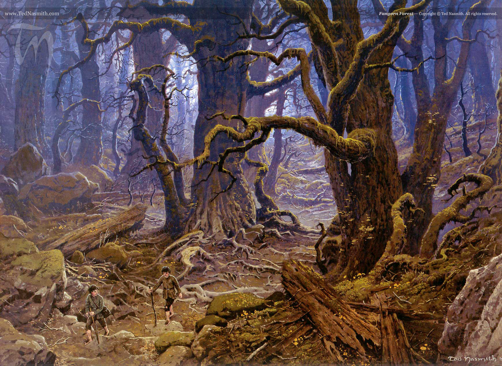

Terror en los confines de la Comarca: Los Hobbits en el Viejo Bosque

En la película de La Comunidad del Anillo, los cuatro hobbits abandonan la Comarca y llegan casi de inmediato a Bree. Sin embargo, en la obra original de J.R.R. Tolkien, Merry, Pippin, Frodo y Sam tuvieron que cruzar una frontera terrorífica antes de dejar atrás sus tierras: el indomable y hostil Viejo Bosque.
Este territorio salvaje, situado al este de los gamos, no era un bosque común. Los árboles tenían una consciencia maliciosa, odiaban a las criaturas caminantes y eran capaces de alterar los caminos para atrapar a los viajeros.
1. Los árboles que susurran y vigilan
Nada más adentrarse en la arboleda, los hobbits sintieron una pesadez asfixiante. Tolkien describe que los árboles parecían esquivarlos, cerrando los senderos a sus espaldas y guiándolos sutilmente hacia el corazón más denso y peligroso de la selva. El aire estaba cargado de un murmullo constante, como si las raíces y las ramas estuvieran conspirando en una lengua antigua para aplastar a los intrusos que osaban profanar sus dominios.
2. La trampa del Viejo Hombre-Sauce
Fatigados por el laberinto forestal, los hobbits llegaron a las orillas del río Tornasauce. Allí descansaba un sauce gigantesco que desprendía una magia somnolienta irresistible. Mientras Frodo y Sam cayeron dormidos sobre las raíces, el árbol atacó: **atrapó a Merry y Pippin dentro de las grietas de su tronco**, comenzando a aplastarlos lentamente. El Viejo Hombre-Sauce (Old Man Willow) era un espíritu atrapado en la madera, lleno de un odio profundo hacia todo lo que caminaba libremente por la Tierra Media.
💡 ¿Sabías que...?
El Viejo Hombre-Sauce no era un Ent corrupto, sino un espíritu natural maligno que había despertado dentro del árbol. Tolkien dejó caer en sus manuscritos que este sauce controlaba casi la mitad de los árboles del Viejo Bosque a través de sus raíces subterráneas interconectadas.
"¡Venid, pequeños amigos! ¡Dejad vuestras penas! ¡Tom os llama, las canciones ya empiezan!" — El rescate llegó de la mano de Tom Bombadil, cuyas rimas mágicas obligaron al sauce a liberar a los cautivos.
3. El peligro de las Quebradas de los Túmulos
Tras escapar del árbol gracias a Tom, los hobbits no tardaron en caer en otra trampa letal en las lindes del bosque: las Nieblas de los Túmulos. Espíritus oscuros (los Tumularios) capturaron a los cuatro amigos, vistiéndolos con ropajes funerarios blancos y joyas antiguas para sacrificarlos. Fue de nuevo la oportuna intervención de Bombadil, invocado por una canción de Frodo, lo que los salvó de una muerte sombría antes de llegar a la seguridad de la taberna de Bree.